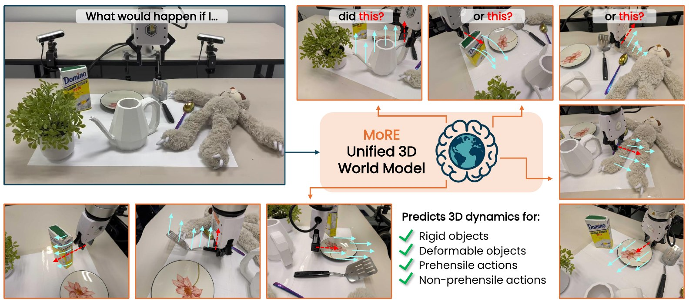
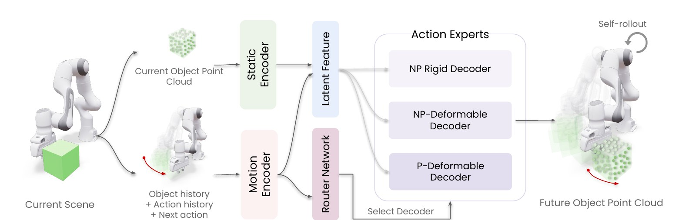
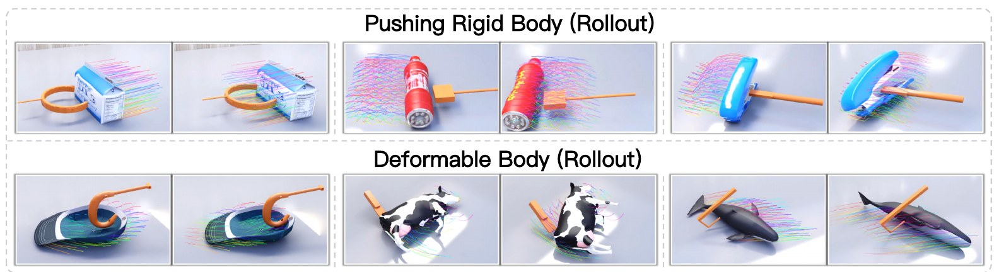
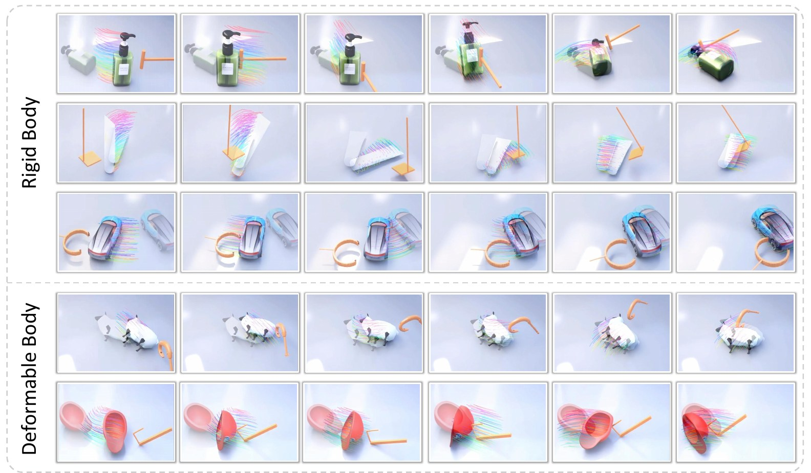

MoRE is a 3D point-cloud world model that infers the physical regime from a short interaction history and routes each interaction to a dedicated rigid, deformable, or prehensile motion expert. One model, real-time, and ready for MPC.
Abstract
A robotic world model should predict how objects evolve under robot actions and physical dynamics. While recent 3D world models have shown strong predictive capabilities, they still struggle with the heterogeneous dynamics arising from diverse object interactions. To address this in a unified framework, we decompose robotic interactions into distinct physical regimes and assign each to a specialized motion expert. We introduce MoRE, a 3D world model with a mixture of motion experts organized around rigid, deformable, and prehensile dynamics. This design enables a single model to capture diverse physical behaviors while preserving regime-specific priors. Trained on mixed simulation and real-world data, MoRE integrates with Model Predictive Control (MPC) to support diverse manipulation tasks. Experiments show that MoRE improves prediction accuracy across physics regimes, leading to stronger real-world MPC performance.
What would happen if the robot did this… or this?

We need a world model that is 3D, multi-physics, multi-tool, and feed-forward. Existing methods cover only part of this. MoRE pairs a large mixed dataset with a physics-informed mixture of motion experts.
| Method | Feed- forward | Multi- physics | Multi- tool | 3D |
|---|
† ParticleFormer supports multiple tools but is trained per scene. PointWorld relies on implicit dynamics; MoRE explicitly routes to physics-aligned experts.
One shared encoder, many physics

Interactive: watch the router pick an expert
Planning with the world model
- Probe: a few random pokes; the router infers the regime.
- Sample: candidate pushes (M contacts × N directions).
- Roll out: every candidate with MoRE.
- Score: Chamfer distance to the goal; keep the best.
- Execute & re-plan: from the newly observed point cloud.
Seeing is believing
Drag the scrubber to step through predicted 3D flow frame by frame. MPC rollouts play as prediction → execution pairs, one planning step at a time.
Dynamics prediction in simulation
More simulation rollouts from the paper

Real-world dynamics: one model, many materials
One model, four interactions in the same scene: rigid box, plate from two sides, and a soft plush sloth.
MPC rollouts in simulation
MPC rollout gallery from the paper

MPC in the real world
BibTeX
@inproceedings{zhu2026more,
title = {MoRE: Mixture-of-Experts for Multi-Physics Robotic World Models},
author = {Zhu, Ziyu and Liu, Shaowei and Zhai, Albert J. and Che, Henry and Ma, Wei-Chiu and Wang, Shenlong},
booktitle = {Conference on Robot Learning (CoRL)},
year = {2026}
}Acknowledgments. This project is supported by the NSF Awards #2331878, #2340254, #2312102, #2414227, #2404385, and #2525287. We greatly appreciate the NCSA for providing computing resources through Delta and Delta AI program. We thank the support from the NVIDIA Academic Grant Program for Researchers.